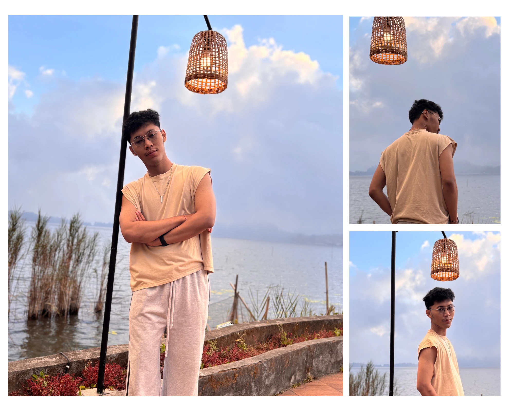

Web Experience
Menciptakan pengalaman website yang modern, mudah digunakan, dan responsif.
Saya menggabungkan teknologi dan kreativitas untuk membantu bisnis, brand, dan individu membangun kehadiran digital yang kuat. saya berfokus pada pengembangan website, pengelolaan media sosial, produksi konten kreatif, dan video editing. Website portofolio ini dirancang sebagai representasi identitas saya di dunia digital sekaligus sebagai media untuk menampilkan karya, memperkenalkan layanan, dan mendapatkan klien potensial. Website harus memberikan kesan modern, profesional, kreatif, dan memiliki karakter visual yang kuat.

Dengan menggabungkan pola pikir strategis dan pendekatan kreatif untuk menciptakan solusi yang bukan hanya terlihat menarik, tetapi juga punya tujuan yang jelas.
Dari ide awal sampai eksekusi, setiap langkah dirancang agar selaras dengan identitas dan tujuan branding kamu.
Menciptakan pengalaman website yang modern, mudah digunakan, dan responsif.
Mengubah ide menjadi konten visual dan cerita yang menarik untuk berbagai platform.
Membantu brand membangun komunitas lewat perencanaan konten dan komunikasi yang konsisten.
Merancang kampanye digital yang relevan dengan audiens dan tujuan pertumbuhan bisnis.
Klik pada kartu proyek untuk melihat galeri dan rincian hasil karya.
Eksplorasi tampilan digital yang fokus pada pengalaman pengguna dan kemudahan navigasi.
Konsep identitas visual untuk brand lifestyle dengan karakter modern dan premium.
Rancangan kampanye digital yang menghubungkan pesan brand dengan audiensnya.
Sistem konten sosial media untuk membangun karakter brand yang konsisten.
Memahami tantangan, audiens, dan tujuan yang ingin dicapai.
Menentukan prioritas dan arah kreatif yang paling relevan.
Mengembangkan solusi dengan komunikasi dan proses yang transparan.
Meninjau hasil dan menemukan peluang perbaikan berikutnya.
Ceritakan kebutuhan atau proyek yang sedang kamu siapkan. Mari mulai percakapan dan temukan langkah terbaik untuk bisnismu.